2025 National 5 Physics - Section 1 questions
Source: Scottish Qualifications Authority (SQA) / Qualifications Scotland. This is a StemInteract HTML companion, not an official HTML edition. Selectable text is supplied alongside original page images. Use the images or original PDF for equations, powers, fractions, vector notation, tables and diagrams; text extraction cannot fully preserve mathematical layout.
Jump to a question
PDF page 1
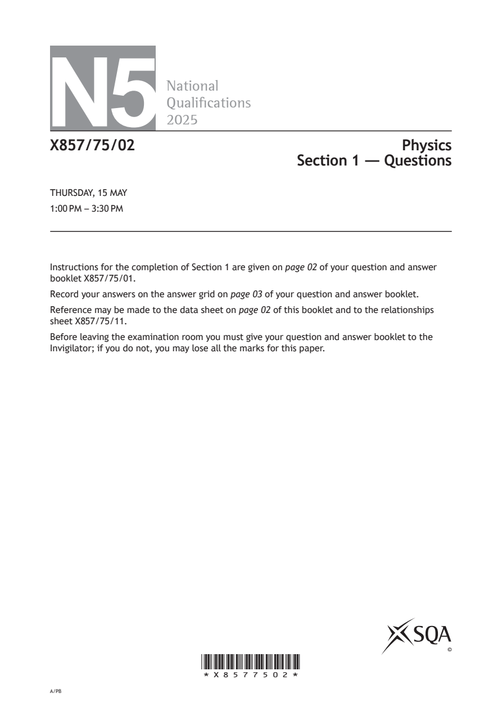
Selectable page text
N5
National
Qualications
2025
X857/75/02 Physics
Section 1 — Questions
THURSDAY, 15 MAY
1:00 PM – 3:30 PM
Instructions for the completion of Section 1 are given on page 02 of your question and answer
booklet X857/75/01.
Record your answers on the answer grid on page 03 of your question and answer booklet.
Reference may be made to the data sheet on page 02 of this booklet and to the relationships
sheet X857/75/11.
Before leaving the examination room you must give your question and answer booklet to the
Invigilator; if you do not, you may lose all the marks for this paper.
©
*X8577502*
A/PBPDF page 2
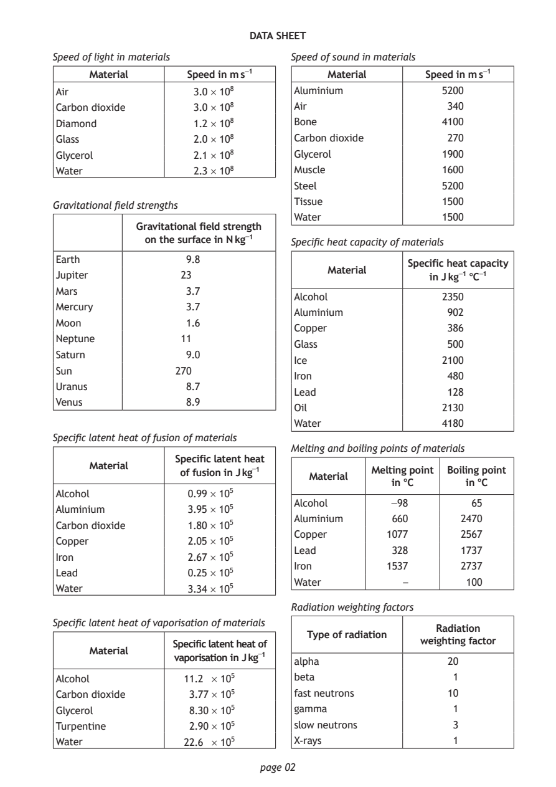
Selectable page text
DATA SHEET
Speed of light in materials Speed of sound in materials
Material Speed in m s⁻¹ Material Speed in m s⁻¹
Air 3.0 × 10⁸ Aluminium 5200
Carbon dioxide 3.0 × 10⁸ Air 340
Diamond 1.2 × 10⁸ Bone 4100
Glass 2.0 × 10⁸ Carbon dioxide 270
Glycerol 2.1 × 10⁸ Glycerol 1900
Water 2.3 × 10⁸ Muscle 1600
Steel 5200
Tissue 1500
Gravitational field strengths
Water 1500
Gravitational field strength
on the surface in N kg⁻¹ Specific heat capacity of materials
Earth 9.8
Specific heat capacity
Material
Jupiter 23 in J kg⁻¹ °C⁻¹
Mars 3.7
Alcohol 2350
Mercury 3.7
Aluminium 902
Moon 1.6
Copper 386
Neptune 11
Glass 500
Saturn 9.0
Ice 2100
Sun 270
Iron 480
Uranus 8.7
Lead 128
Venus 8.9
Oil 2130
Water 4180
Specific latent heat of fusion of materials
Melting and boiling points of materials
Specific latent heat
Material
of fusion in J kg⁻¹ Melting point Boiling point
Material
in °C in °C
Alcohol 0.99 × 10⁵
Alcohol −98 65
Aluminium 3.95 × 10⁵
Aluminium 660 2470
Carbon dioxide 1.80 × 10⁵
Copper 1077 2567
Copper 2.05 × 10⁵
Lead 328 1737
Iron 2.67 × 10⁵
Iron 1537 2737
Lead 0.25 × 10⁵
Water – 100
Water 3.34 × 10⁵
Radiation weighting factors
Specific latent heat of vaporisation of materials
Radiation
Type of radiation
weighting factor
Specific latent heat of
Material
vaporisation in J kg⁻¹
alpha 20
Alcohol 11.2 × 10⁵ beta 1
Carbon dioxide 3.77 × 10⁵ fast neutrons 10
Glycerol 8.30 × 10⁵ gamma 1
Turpentine 2.90 × 10⁵ slow neutrons 3
Water 22.6 × 10⁵ X-rays 1
page 02PDF page 3
Section 1, Question 1Section 1, Question 2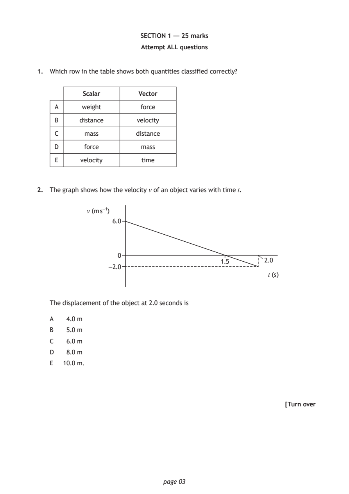
Selectable page text
SECTION 1 — 25 marks
Attempt ALL questions
1. Which row in the table shows both quantities classified correctly?
Scalar Vector
A weight force
B distance velocity
C mass distance
D force mass
E velocity time
2. The graph shows how the velocity v of an object varies with time t.
v (ms⁻¹)
6.0
0
1.5 2.0
−2.0
t (s)
The displacement of the object at 2.0 seconds is
A 4.0 m
B 5.0 m
C 6.0 m
D 8.0 m
E 10.0 m.
[Turn over
page 03PDF page 4
Section 1, Question 3Section 1, Question 4Section 1, Question 5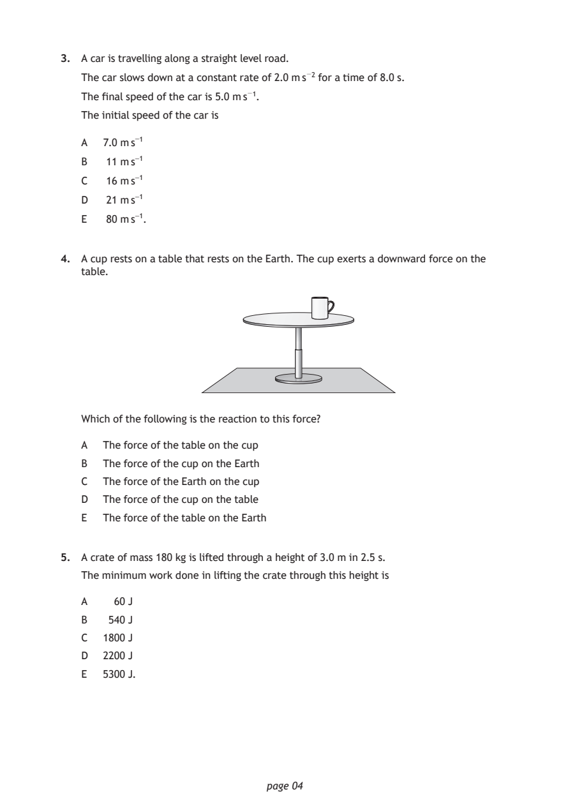
Selectable page text
3. A car is travelling along a straight level road.
The car slows down at a constant rate of 2.0 m s⁻² for a time of 8.0 s.
The final speed of the car is 5.0 m s⁻¹.
The initial speed of the car is
A 7.0 m s⁻¹
B 11 m s⁻¹
C 16 m s⁻¹
D 21 m s⁻¹
E 80 m s⁻¹.
4. A cup rests on a table that rests on the Earth. The cup exerts a downward force on the
table.
Which of the following is the reaction to this force?
A The force of the table on the cup
B The force of the cup on the Earth
C The force of the Earth on the cup
D The force of the cup on the table
E The force of the table on the Earth
5. A crate of mass 180 kg is lifted through a height of 3.0 m in 2.5 s.
The minimum work done in lifting the crate through this height is
A 60 J
B 540 J
C 1800 J
D 2200 J
E 5300 J.
page 04PDF page 5
Section 1, Question 6Section 1, Question 7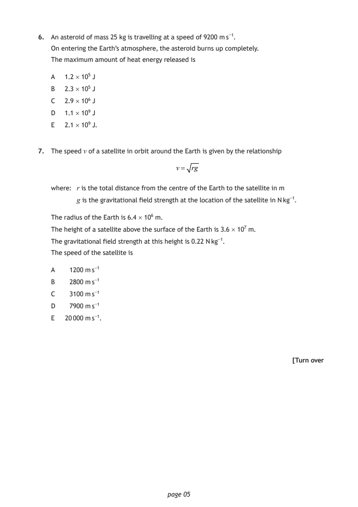
Selectable page text
6. An asteroid of mass 25 kg is travelling at a speed of 9200 m s⁻¹.
On entering the Earth’s atmosphere, the asteroid burns up completely.
The maximum amount of heat energy released is
A 1.2 × 10⁵ J
B 2.3 × 10⁵ J
C 2.9 × 10⁶ J
D 1.1 × 10⁹ J
E 2.1 × 10⁹ J.
7. The speed v of a satellite in orbit around the Earth is given by the relationship
v= rg
where: r is the total distance from the centre of the Earth to the satellite in m
g is the gravitational field strength at the location of the satellite in N kg⁻¹.
The radius of the Earth is 6.4 × 10⁶ m.
The height of a satellite above the surface of the Earth is 3.6 × 10⁷ m.
The gravitational field strength at this height is 0.22 N kg⁻¹.
The speed of the satellite is
A 1200 m s⁻¹
B 2800 m s⁻¹
C 3100 m s⁻¹
D 7900 m s⁻¹
E 20 000 m s⁻¹.
[Turn over
page 05PDF page 6
Section 1, Question 8Section 1, Question 9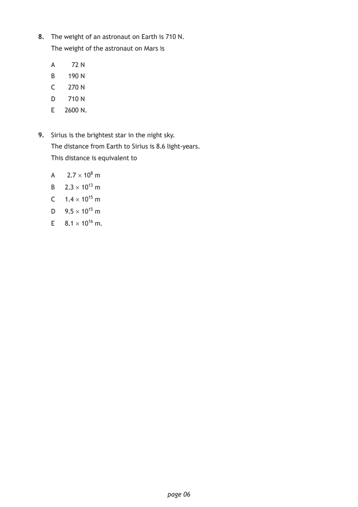
Selectable page text
8. The weight of an astronaut on Earth is 710 N.
The weight of the astronaut on Mars is
A 72 N
B 190 N
C 270 N
D 710 N
E 2600 N.
9. Sirius is the brightest star in the night sky.
The distance from Earth to Sirius is 8.6 light-years.
This distance is equivalent to
A 2.7 × 10⁸ m
B 2.3 × 10¹³ m
C 1.4 × 10¹⁵ m
D 9.5 × 10¹⁵ m
E 8.1 × 10¹⁶ m.
page 06PDF page 7
Section 1, Question 10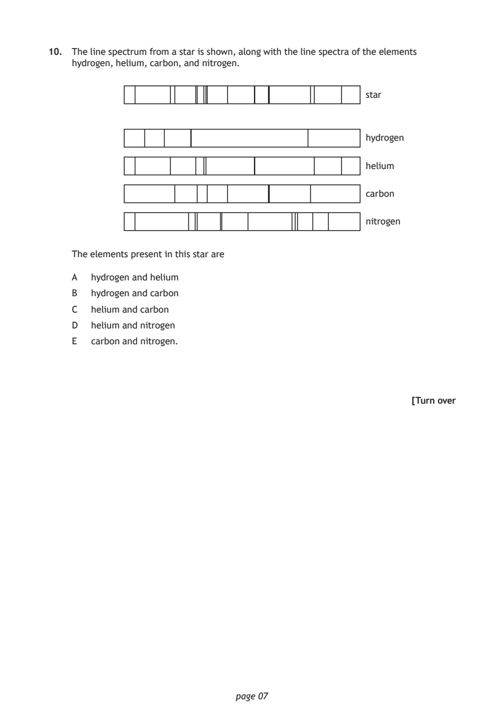
Selectable page text
10. The line spectrum from a star is shown, along with the line spectra of the elements
hydrogen, helium, carbon, and nitrogen.
star
hydrogen
helium
carbon
nitrogen
The elements present in this star are
A hydrogen and helium
B hydrogen and carbon
C helium and carbon
D helium and nitrogen
E carbon and nitrogen.
[Turn over
page 07PDF page 8
Section 1, Question 11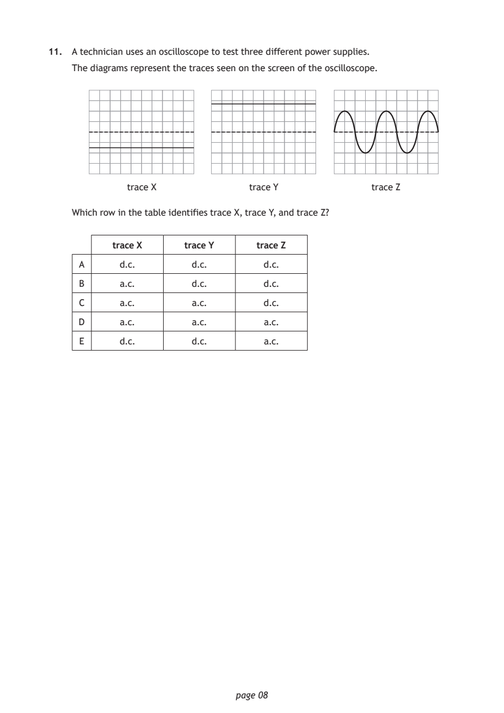
Selectable page text
11. A technician uses an oscilloscope to test three different power supplies.
The diagrams represent the traces seen on the screen of the oscilloscope.
trace X trace Y trace Z
Which row in the table identifies trace X, trace Y, and trace Z?
trace X trace Y trace Z
A d.c. d.c. d.c.
B a.c. d.c. d.c.
C a.c. a.c. d.c.
D a.c. a.c. a.c.
E d.c. d.c. a.c.
page 08PDF page 9
Section 1, Question 12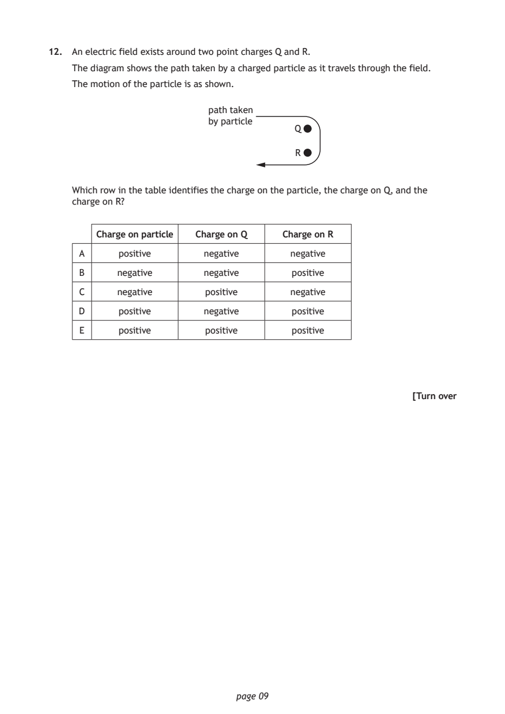
Selectable page text
12. An electric field exists around two point charges Q and R.
The diagram shows the path taken by a charged particle as it travels through the field.
The motion of the particle is as shown.
path taken
by particle
Q
R
Which row in the table identifies the charge on the particle, the charge on Q, and the
charge on R?
Charge on particle Charge on Q Charge on R
A positive negative negative
B negative negative positive
C negative positive negative
D positive negative positive
E positive positive positive
[Turn over
page 09PDF page 10
Section 1, Question 13Section 1, Question 14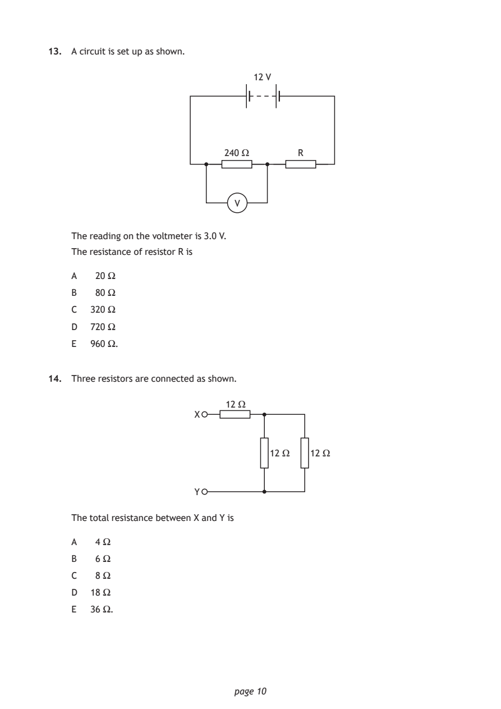
Selectable page text
13. A circuit is set up as shown.
12 V
240 Ω R
V
The reading on the voltmeter is 3.0 V.
The resistance of resistor R is
A 20 Ω
B 80 Ω
C 320 Ω
D 720 Ω
E 960 Ω.
14. Three resistors are connected as shown.
12 Ω
X
12 Ω 12 Ω
Y
The total resistance between X and Y is
A 4 Ω
B 6 Ω
C 8 Ω
D 18 Ω
E 36 Ω.
page 10PDF page 11
Section 1, Question 15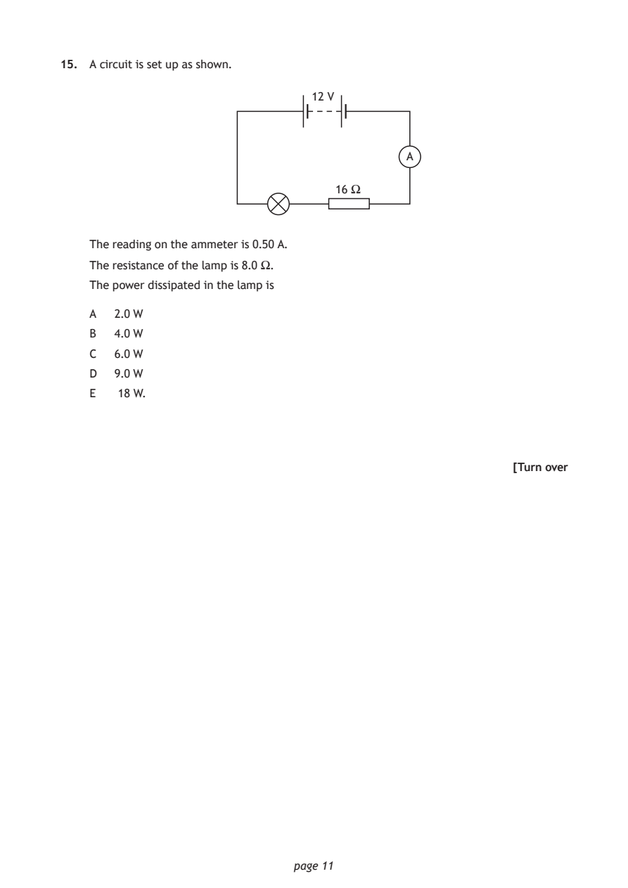
Selectable page text
15. A circuit is set up as shown.
12 V
A
16 Ω
The reading on the ammeter is 0.50 A.
The resistance of the lamp is 8.0 Ω.
The power dissipated in the lamp is
A 2.0 W
B 4.0 W
C 6.0 W
D 9.0 W
E 18 W.
[Turn over
page 11PDF page 12
Section 1, Question 16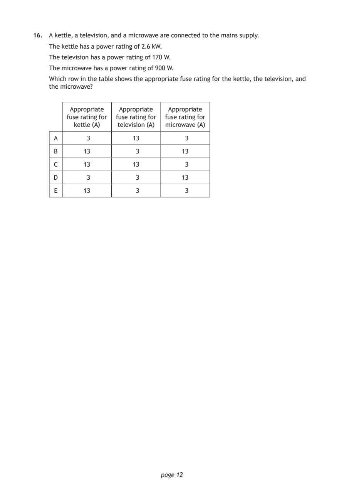
Selectable page text
16. A kettle, a television, and a microwave are connected to the mains supply.
The kettle has a power rating of 2.6 kW.
The television has a power rating of 170 W.
The microwave has a power rating of 900 W.
Which row in the table shows the appropriate fuse rating for the kettle, the television, and
the microwave?
Appropriate Appropriate Appropriate
fuse rating for fuse rating for fuse rating for
kettle (A) television (A) microwave (A)
A 3 13 3
B 13 3 13
C 13 13 3
D 3 3 13
E 13 3 3
page 12PDF page 13
Section 1, Question 17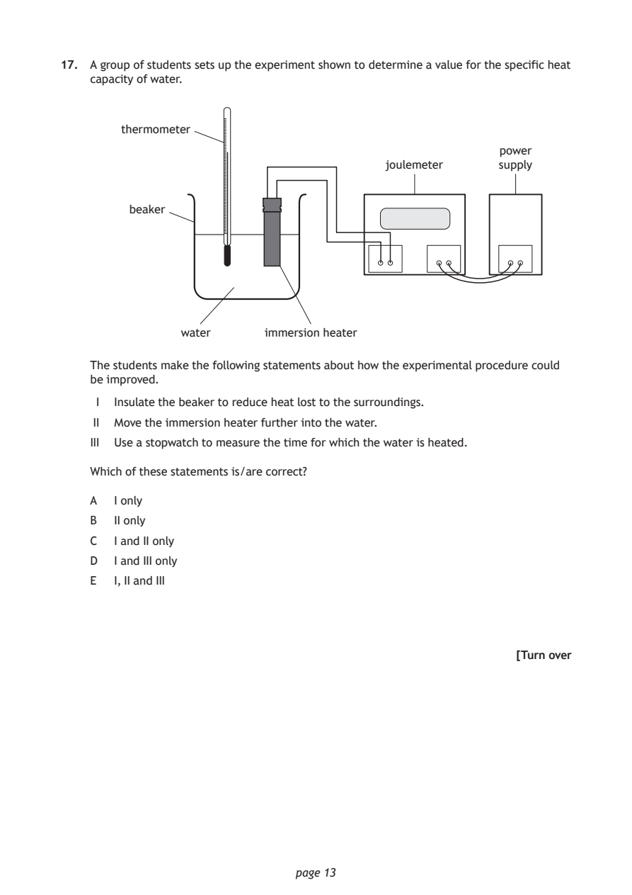
Selectable page text
17. A group of students sets up the experiment shown to determine a value for the specific heat
capacity of water.
thermometer
power
joulemeter supply
beaker
water immersion heater
The students make the following statements about how the experimental procedure could
be improved.
I Insulate the beaker to reduce heat lost to the surroundings.
II Move the immersion heater further into the water.
III Use a stopwatch to measure the time for which the water is heated.
Which of these statements is/are correct?
A I only
B II only
C I and II only
D I and III only
E I, II and III
[Turn over
page 13PDF page 14
Section 1, Question 18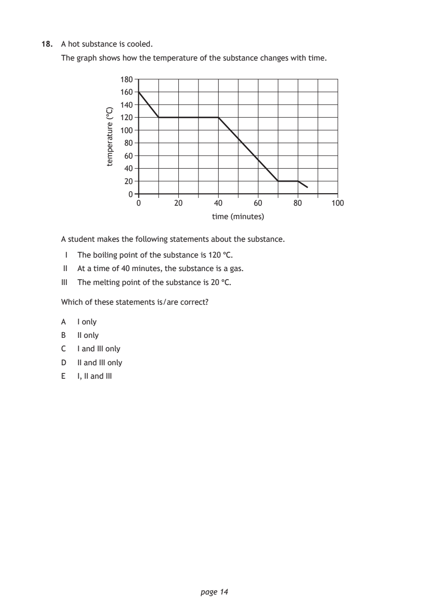
Selectable page text
18. A hot substance is cooled.
The graph shows how the temperature of the substance changes with time.
180
160
140
120
100
80
60
40
20
0
0 20
time (minutes)
page 14
)C°(
erutarepmet
40 60 80 100
A student makes the following statements about the substance.
I The boiling point of the substance is 120 °C.
II At a time of 40 minutes, the substance is a gas.
III The melting point of the substance is 20 °C.
Which of these statements is/are correct?
A I only
B II only
C I and III only
D II and III only
E I, II and IIIPDF page 15
Section 1, Question 19Section 1, Question 20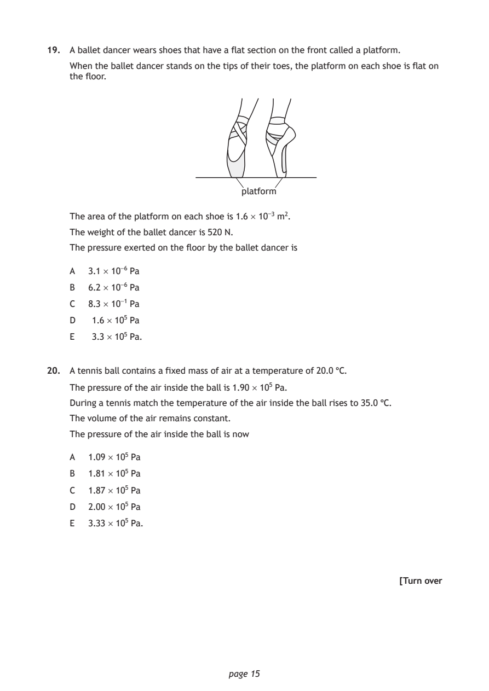
Selectable page text
19. A ballet dancer wears shoes that have a flat section on the front called a platform.
When the ballet dancer stands on the tips of their toes, the platform on each shoe is flat on
the floor.
platform
The area of the platform on each shoe is 1.6 × 10⁻³ m².
The weight of the ballet dancer is 520 N.
The pressure exerted on the floor by the ballet dancer is
A 3.1 × 10⁻⁶ Pa
B 6.2 × 10⁻⁶ Pa
C 8.3 × 10⁻¹ Pa
D 1.6 × 10⁵ Pa
E 3.3 × 10⁵ Pa.
20. A tennis ball contains a fixed mass of air at a temperature of 20.0 °C.
The pressure of the air inside the ball is 1.90 × 10⁵ Pa.
During a tennis match the temperature of the air inside the ball rises to 35.0 °C.
The volume of the air remains constant.
The pressure of the air inside the ball is now
A 1.09 × 10⁵ Pa
B 1.81 × 10⁵ Pa
C 1.87 × 10⁵ Pa
D 2.00 × 10⁵ Pa
E 3.33 × 10⁵ Pa.
[Turn over
page 15PDF page 16
Section 1, Question 21Section 1, Question 22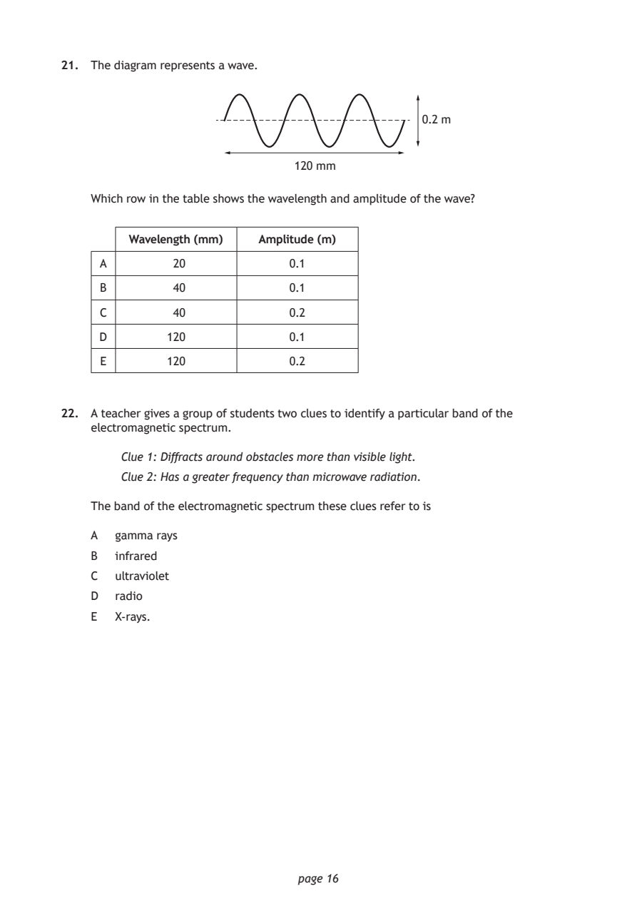
Selectable page text
21. The diagram represents a wave.
0.2 m
120 mm
Which row in the table shows the wavelength and amplitude of the wave?
Wavelength (mm) Amplitude (m)
A 20 0.1
B 40 0.1
C 40 0.2
D 120 0.1
E 120 0.2
22. A teacher gives a group of students two clues to identify a particular band of the
electromagnetic spectrum.
Clue 1: Diffracts around obstacles more than visible light.
Clue 2: Has a greater frequency than microwave radiation.
The band of the electromagnetic spectrum these clues refer to is
A gamma rays
B infrared
C ultraviolet
D radio
E X-rays.
page 16PDF page 17
Section 1, Question 23Section 1, Question 24Section 1, Question 25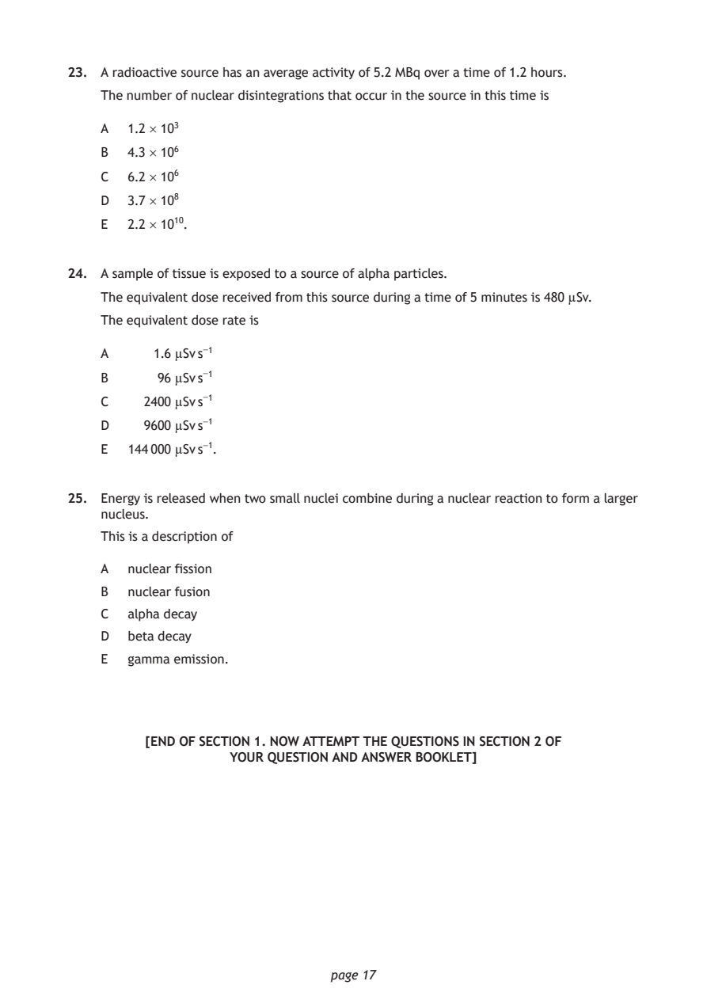
Selectable page text
23. A radioactive source has an average activity of 5.2 MBq over a time of 1.2 hours.
The number of nuclear disintegrations that occur in the source in this time is
A 1.2 × 10³
B 4.3 × 10⁶
C 6.2 × 10⁶
D 3.7 × 10⁸
E 2.2 × 10¹⁰.
24. A sample of tissue is exposed to a source of alpha particles.
The equivalent dose received from this source during a time of 5 minutes is 480 µSv.
The equivalent dose rate is
A 1.6 µSv s⁻¹
B 96 µSv s⁻¹
C 2400 µSv s⁻¹
D 9600 µSv s⁻¹
E 144 000 µSv s⁻¹.
25. Energy is released when two small nuclei combine during a nuclear reaction to form a larger
nucleus.
This is a description of
A nuclear fission
B nuclear fusion
C alpha decay
D beta decay
E gamma emission.
[END OF SECTION 1. NOW ATTEMPT THE QUESTIONS IN SECTION 2 OF
YOUR QUESTION AND ANSWER BOOKLET]
page 17PDF page 18
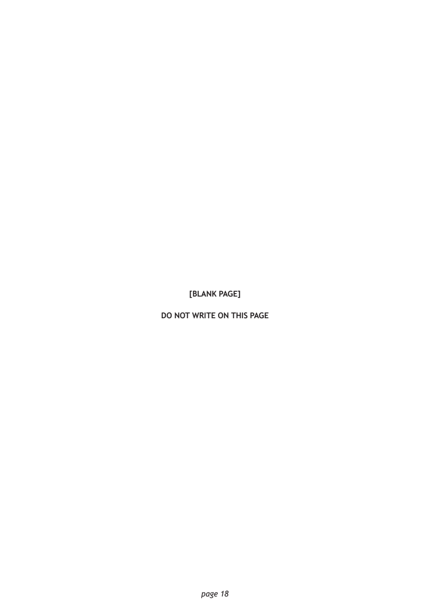
Selectable page text
[BLANK PAGE]
DO NOT WRITE ON THIS PAGE
page 18PDF page 19
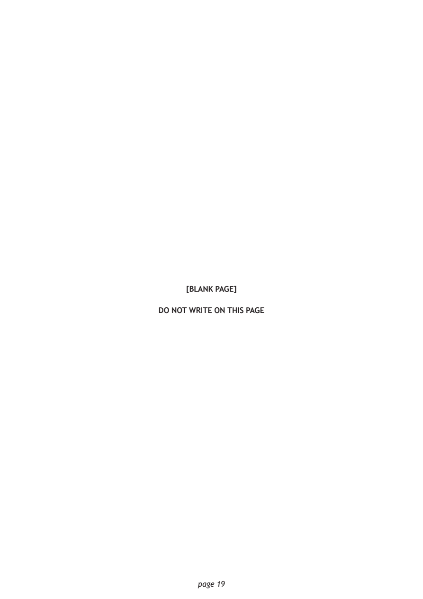
Selectable page text
[BLANK PAGE]
DO NOT WRITE ON THIS PAGE
page 19PDF page 20

Selectable page text
[BLANK PAGE]
DO NOT WRITE ON THIS PAGE
page 20